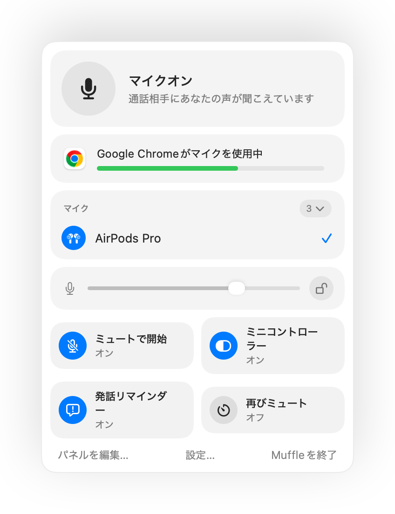

Macのブラウザタブでのオンライン通話をミュートする方法
Google Meetやウェブ版Teams、SoWorkやGatherなどのバーチャルオフィス、Whereby、Jitsiなど、ブラウザ上で動く通話が増えています。しかし、それぞれミュートボタンやショートカットキーが異なり、該当のタブが最前面にないと操作できません。
さらにMacのブラウザはAirPodsのミュート操作を受け付けません。Muffleを使えば、AirPodsの操作や1つの共通ショートカットキーで、すべてのタブのマイクをまとめて消音できます。
Muffleを3日間無料でお試しMac App Storeで近日公開
ウェブ通話をミュートする手順
- Muffleをインストールし、「マイクへのアクセスを許可」します。
- 任意のブラウザタブで通話を開きます。
- どのAppやタブからでも、AirPodsのステムを押すかControl-Option-Mを押してミュートします。
- メニューバーのアイコンを確認します。赤色はマイクがオフであることを示します。

- バーチャルオフィスではマイクが長時間オンになりがちです。フローティングミニコントローラーを表示しておけば、いつでも状態を確認できます。
- 「ミュート中です」のリマインダー機能により、ミュート中に話し始めたときに気づくことができます。
よくある質問
なぜChromeではAirPodsの操作が効かないのですか？
ChromeがウェブページでのmacOSのAirPodsミュートジェスチャーに対応していないためです。Muffleが代わりに操作を受け取り、マイク自体をミュートします。
SoWorkやGatherでも使えますか？
はい。Muffleがマイクをオフにすれば、マイクを使用するあらゆるサイトで音声がミュートされます。